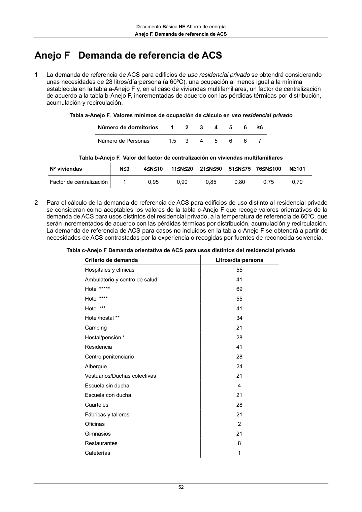

DB-HE · Anejo F. Demanda de referencia de ACS · versión 2022-06-14 · capa oficial
Formatos: JSON compacto · Markdown · PDF fuente
Ámbito del documento · texto del ámbito · documento y tablas
ID técnico a0082 · PDF pág. 52-54 · jerarquía no validada por persona · contrastado con el literal de la página 52 (candidato tipográfico); no validado por persona · padre: raíz
Anejo F. Demanda de referencia de ACS 52 Anejo F Demanda de referencia de ACS 1 La demanda de referencia de ACS para edificios de uso residencial privado se obtendrá considerando unas necesidades de 28 litros/día·persona (a 60ºC), una ocupación al menos igual a la mínima establecida en la tabla a-Anejo F y, en el caso de viviendas multifamiliares, un factor de centralización de acuerdo a la tabla b-Anejo F, incrementadas de acuerdo con las pérdidas térmicas por distribución, acumulación y recirculación. Tabla a-Anejo F. Valores mínimos de ocupación de cálculo en uso residencial privado Número de dormitorios 1 2 3 4 5 6 ≥6 Número de Personas 1,5 3 4 5 6 6 7 Tabla b-Anejo F. Valor del factor de centralización en viviendas multifamiliares Nº viviendas N≤3 4≤N≤10 11≤N≤20 21≤N≤50 51≤N≤75 76≤N≤100 N≥101 Factor de centralización 1 0,95 0,90 0,85 0,80 0,75 0,70 2 Para el cálculo de la demanda de referencia de ACS para edificios de uso distinto al residencial privado se consideran como aceptables los valores de la tabla c-Anejo F que recoge valores orientativos de la demanda de ACS para usos distintos del residencial privado, a la temperatura de referencia de 60ºC, que serán incrementados de acuerdo con las pérdidas térmicas por distribución, acumulación y recirculación. La demanda de referencia de ACS para casos no incluidos en la tabla c-Anejo F se obtendrá a partir de necesidades de ACS contrastadas por la experiencia o recogidas por fuentes de reconocida solvencia. Tabla c-Anejo F Demanda orientativa de ACS para usos distintos del residencial privado Criterio de demanda Litros/día·persona Hospitales y clínicas 55 Ambulatorio y centro de salud 41 Hotel ***** 69 Hotel **** 55 Hotel *** 41 Hotel/hostal ** 34 Camping 21 Hostal/pensión * 28 Residencia 41 Centro penitenciario 28 Albergue 24 Vestuarios/Duchas colectivas 21 Escuela sin ducha 4 Escuela con ducha 21 Cuarteles 28 Fábricas y talleres 21 Oficinas 2 Gimnasios 21 Restaurantes 8 Cafeterías 1 Documento Básico HE Ahorro de energía Anejo F. Demanda de referencia de ACS 53 3 El consumo de ACS a una temperatura (T), de preparación, distribución o uso, distinta de la de referencia (60ºC), se puede obtener a partir del consumo de ACS a la temperatura de referencia usando las siguientes expresiones: D(T) = ∑ 12 Di(T) i=1 Di(T) = Di(60ºC) 60-Ti T-Ti donde: D(T) Demanda de agua caliente sanitaria anual a la temperatura T elegida; Di(T) Demanda de agua caliente sanitaria para el mes i, a la temperatura T elegida; Di(60 ºC) Demanda de agua caliente sanitaria para el mes i, a la temperatura de 60 ºC; T Temperatura del acumulador final; Ti Temperatura media del agua fría en el mes i (según Anejo G). Documento Básico HE Ahorro de energía


PDF fuente redistribuible: copia fiel enlazada en esta página (SHA256 verificado).